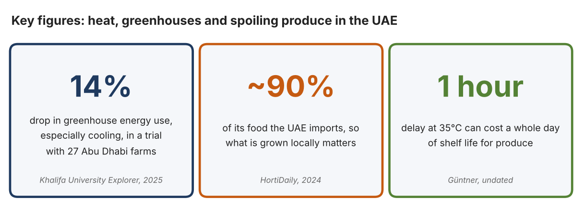
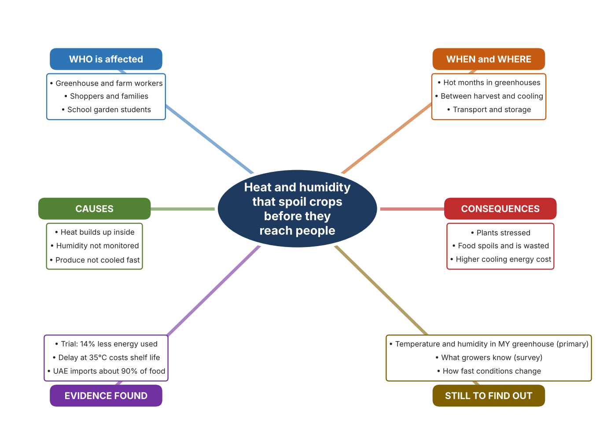
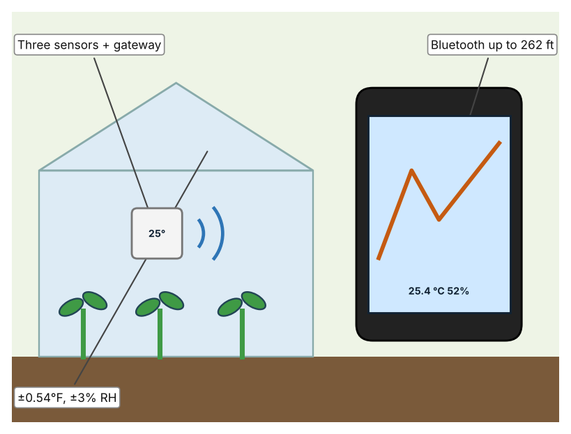
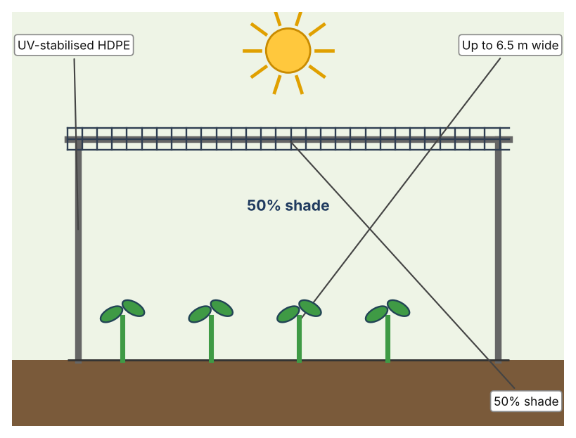
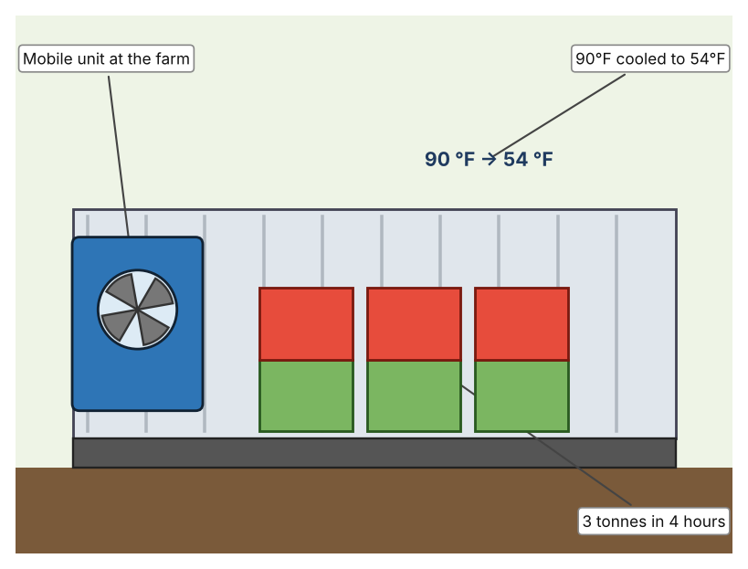

A1 · Design need
Identify and explain the problem faced by your client and community.
My client is the Science Department of a Dubai school, represented by the Head of Science, which looks after a small greenhouse and a school growing project. The department wants students to grow food that does not spoil or wilt in the heat. It needs high temperature and humidity inside growing spaces to be understood and kept under control, so that crops stay healthy and food is not wasted.
The people most affected are growers and greenhouse workers, because heat reduces how well plants grow. Shoppers and families are a second group, because spoiled food costs money and reduces what is available. Students who run the school growing project are a third group.
The need is real because food is lost between the farm and the plate in a hot country. Khalifa University researchers reported a trial with 27 Abu Dhabi farms in which greenhouses saw a 14 percent drop in energy use, especially for cooling, as part of work on reducing post-harvest loss (Khalifa University Explorer). HortiDaily reported that the UAE is mostly desert and imports around 90 percent of its food, which is why local greenhouses matter (HortiDaily). The first article does not name an author and neither source gives temperature figures for a greenhouse, so I need to find out about my own school.
Figure 1 summarises the key numbers. The articles describe projects and national food facts, not conditions inside a greenhouse, so I treat them as a pattern and not as proof about my school. In my own words: heat damages crops both while they grow and after they are picked, so I need to know what the conditions really are. Figure 2 is my mind map of the problem.
285 words


A2 · Research plan
Six research questions of different types, each with a priority, a research type and evidence.
| # | Question | Priority | Primary / secondary | Evidence | Brief answer |
|---|---|---|---|---|---|
| 1 | Factual: How much food is wasted after harvest in the UAE, and what is being done? | High | Secondary | Khalifa University Explorer, 4 Dec. 2025 (Appendix A, Source 1) | A trial with 27 Abu Dhabi farms, with ADAFSA, aims to reduce post-harvest loss; greenhouses saw a 14% drop in energy use, especially cooling. |
| 2 | Factual: Why does the UAE need local greenhouses, and how are they cooled? | High | Secondary | HortiDaily, 20 Sept. 2024 (Appendix A, Source 2) | About 80% desert and importing about 90% of food; one desert greenhouse has been given an electrified cooling and heating plant. No temperatures given. |
| 3 | Conceptual: How can temperature and humidity be measured, shaded and cooled? | Medium | Secondary | Govee page (Source 3); Garware page (Source 4); Güntner page (Source 5) | A sensor measures temperature and humidity; shade net blocks sunlight; a pre-cooling container removes field heat from picked produce. |
| 4 | Debatable: Should growers monitor conditions, shade their crops, or cool produce after harvest? | Medium | Secondary | Appendix A, Sources 3, 4 and 5 | Monitoring shows the problem but fixes nothing; shade reduces sunlight but gives no figure for cooling; pre-cooling saves shelf life but only after harvest. My view: monitoring first shows which of the others is needed. |
| 5 | Debatable (challenges my assumption, UAE source): Greenhouses in the desert can only be kept cool with expensive air conditioning, so monitoring cannot save energy. | High | Secondary | Khalifa University Explorer, 2025 (Source 1); HortiDaily, 2024 (Source 2) | One desert greenhouse invested in an electrified plant, but the trial reported a 14% energy drop, especially cooling, at 27 farms. The report does not say what caused the drop, so I cannot assume monitoring did it. |
| 6 | Factual (primary): What are the temperature and humidity in our greenhouse during the school day, and what do students and growers know? | High | Primary | Own readings and survey (Appendix A, Sources 6 and 7) | [Student data needed: write the readings (time, °C, % RH) and survey averages, then two sentences on the pattern you see.] |
A3 · Existing products
Three significantly different products, each analysed with ACCESS FM, with pros and cons.
Product 1: Wireless thermo-hygrometer set (Govee 2s Lite)

Illustration by the author based on the Govee 2s Lite page, Govee (Appendix A, Source 3). [Student: replace with a photo from the source, cited MLA 9]
Product 2: Shade net (Garware V5)

Illustration by the author based on the Garware V5 page, Garware (Appendix A, Source 4). [Student: replace with a photo from the source, cited MLA 9]
Product 3: Pre-cooling container (Güntner)

Illustration by the author based on the Güntner case study (Appendix A, Source 5). [Student: replace with a photo from the source, cited MLA 9]
ACCESS FM analysis
| ACCESS FM | Product 1 | Product 2 | Product 3 |
|---|---|---|---|
| Aesthetics | Small white sensors with a display; no more is described (Govee). | Black mesh sheet; look not described beyond the net (Garware). | Metal shipping container; look not described (Güntner). |
| Cost | US$49.99 for gateway and three sensors (Govee). | Price not stated. | Price not stated. |
| Customer | Growers and households who want to watch conditions. | Greenhouse and nursery growers. | Farms that sell fresh vegetables. |
| Environment | Battery type is not stated. | UV stabilised so it lasts in strong sun; no recycling information. | Uses electricity to cool; size of energy use not stated. |
| Size | Bluetooth range up to 262 ft; sensor size not stated. | Rolls of 100 m length, up to 6.5 m wide. | A 20-foot container. |
| Safety | Not described. | Not described. | Not described. |
| Function | Measures temperature and humidity every 2 seconds. | Blocks about half of the sunlight. | Cools 3 tonnes of vegetables from 90°F to 54°F in 4 hours. |
| Materials | Materials are not stated. | HDPE monofilament. | Materials are not stated. |
Pros and cons
| Product 1 | Product 2 | Product 3 | |
|---|---|---|---|
| Pro | Shows live temperature and humidity at low cost. | Cheap way to lower sunlight and heat and needs no power. | Saves shelf life by cooling produce quickly. |
| Con | Only measures; it does not cool anything. | The page gives no figure for how much it cools. | Works only after harvest and the price is not stated. |
A4 · Design brief
Restate the need, summarise the research and the existing products, and state the design intent.
My client, the Science Department of a Dubai school, needs high temperature and humidity in growing spaces to be understood and kept under control, so that crops stay healthy and food is not wasted. The problem is real: a trial with 27 Abu Dhabi farms reported a 14 percent drop in greenhouse energy use, especially cooling (Appendix A, Source 1). The UAE imports around 90 percent of its food, so local growing matters (Appendix A, Source 2).
My research shows that heat affects food both in the greenhouse and after harvest, and that cooling takes energy (Appendix A, Sources 1 and 2). Neither source gives temperatures inside a greenhouse, so I need my own evidence. My debatable questions led me to decide that monitoring, shading and cooling each cover only part of the problem, and my challenged assumption (that desert greenhouses can only be cooled with costly air conditioning) showed me that the sources do not prove what causes energy savings. I will gather my own evidence with readings in our greenhouse and a survey, always with permission (Appendix A, Sources 6 and 7).
I analysed three very different existing solutions. A wireless thermo-hygrometer set shows temperature and humidity every 2 seconds, but it only measures (Appendix A, Source 3). A shade net blocks about half of the sunlight and needs no power, but the page gives no figure for how much it cools (Appendix A, Source 4). A pre-cooling container cools three tonnes of vegetables in four hours, but it works only after harvest and its price is not stated (Appendix A, Source 5). They give me three ideas for inspiration: measuring, reducing the heat source, and cooling the product. Each has a weakness that another covers.
My design intent is therefore to create a solution that shows temperature and humidity in a growing space clearly, so that people can act before crops are harmed. It must be affordable, easy to read, durable in heat and humidity, and accurate. I have deliberately not fixed what form it will take. That decision will be made in Criterion B, after I analyse my own readings and survey against the evidence in Appendix A.
362 words
Appendix A · Research notes and sources
Secondary sources in MLA 9, with notes and where each source is used.
| # | Source (MLA 9) | Key notes | Used in |
|---|---|---|---|
| 1 | “From Desert to Table: Saving Fresh Food from Going to Waste.” Khalifa University Explorer, 4 Dec. 2025, kuexplorer.ku.ac.ae/2025/12/04/from-desert-to-table-saving-fresh-food-from-going-to-waste. Accessed 21 Oct. 2026. | Post-harvest loss; trial with 27 Abu Dhabi farms; greenhouses saw a 14% drop in energy use, especially cooling; partnership with ADAFSA; runs through 2026. Author not stated. | A1; A2 Q1 and Q5; A4. |
| 2 | “UAE: Desert Greenhouse Gets Electrified Cooling and Heating Plant.” HortiDaily, 20 Sept. 2024, hortidaily.com/article/9661010/uae-desert-greenhouse-gets-electrified-cooling-and-heating-plant. Accessed 21 Oct. 2026. | UAE about 80% desert and imports about 90% of its food; a Pure Harvest greenhouse with a Trane plant; no temperature figures. | A1; A2 Q2 and Q5; A4. |
| 3 | “GoveeLife Smart Thermo-Hygrometer 2s Lite.” Govee, us.govee.com/products/goveelife-smart-thermo-hygrometer-2s-lite. Accessed 21 Oct. 2026. | Gateway and three sensors; US$49.99; Bluetooth range 262 ft; ±0.54°F and ±3% RH; 2-second sampling. | A2 Q3 and Q4; A3 Product 1; A4. |
| 4 | “V5 Shade Net.” Garware Technical Fibres, www.garwarefibres.com/products/shade-nets-solutions/v5. Accessed 21 Oct. 2026. | 50% shade; HDPE monofilament; UV stabilised; 100 m length up to 6.5 m wide; no figure for temperature reduction. | A2 Q3 and Q4; A3 Product 2; A4. |
| 5 | “Pre-Cooling Containers Prolong the Shelf-Life of Fruit and Vegetables.” Güntner, guntner.com/our-impact/case-studies/reducing-food-waste-uae. Accessed 21 Oct. 2026. | Six 20-foot containers delivered to UAE farms; each cools 3 tonnes of vegetables in 4 hours from 90°F to 54°F; a one-hour delay at 95°F can cost a full day of shelf life; undated; a company case study. | A2 Q3 and Q4; A3 Product 3; A4. |
| 6 | Primary: greenhouse readings, completed by the student on [date]. Accessed own data. | [Student: summarise your counts.] | A2 primary question; A4. |
| 7 | Primary: survey of [number] people, completed on [date]. | [Student: summarise your averages.] | A2 primary question; A4. |
Primary research instrument 1: greenhouse readings
Student records readings in the school greenhouse with the teacher present, using school equipment, and avoids touching electrical parts.
| Time | Location | Temp (°C) | Humidity (%RH) | Sun or shade | Notes |
|---|---|---|---|---|---|
| Morning | |||||
| Midday | |||||
| Afternoon | |||||
| Evening |
Primary research instrument 2: survey
Rate each statement from 1 (strongly disagree) to 5 (strongly agree). Collect responses with permission and record no names.
| Statement | 1 | 2 | 3 | 4 | 5 | Total responses |
|---|---|---|---|---|---|---|
| I know how hot and humid our greenhouse becomes. | ||||||
| Plants in the greenhouse look stressed on hot days. | ||||||
| I know how long fresh food can stay out in the heat. | ||||||
| I would use a live reading to decide when to ventilate. |